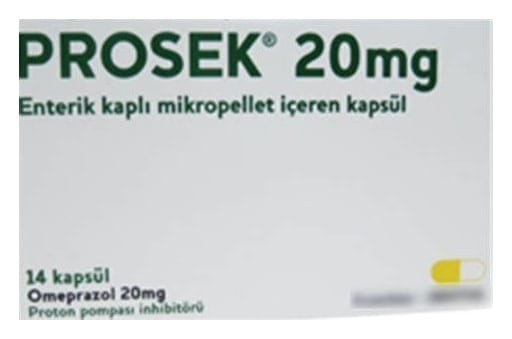

Prosek 20 mg Enterik Kaplı Mikropellet İçeren Kapsül, 14 Adet

Ne için kullanılır
KT · Bölüm 1PROSEK etkin madde olarak omeprazol içerir. "Proton pompası inhibitörü" olarak bilinen ilaçlardan biridir. Midenizdeki asit oluşumunu azaltır.
PROSEK, opak sarı baş ve beyaz gövdeli sert jelatin kapsül şeklindedir. Etkin madde, kapsül içindeki mide asidine dayanıklı enterik kaplı granüllerde bulunur. 14 adet kapsül içeren blister ambalajlarda bulunmaktadır.
PROSEK aşağıdaki durumların tedavisinde kullanılır: Yetişkinlerde: • 'Gastroözofajiyal reflü hastalığı” (GÖRH). Mide asidinin ağrı, iltihaplanma ve mide yanmasına yol açacak şekilde yemek borusuna kaçışı. • Bağırsakların üst kısmındaki ülserler (onikiparmak bağırsağı ülseri) ya da midedeki ülser (gastrik ülser). • 'Helicobacter pylori' adlı bakteri ile enfekte (iltihap oluşturan mikropların bulaştığı) ülserler. Eğer sizde böyle bir durum mevcutsa doktorunuz iltihabı tedavi etmek suretiyle ülseri iyileştirmek için size ayrıca antibiyotik reçete edebilir.
• Nonsteroidal antiinflamatuvar ilaçlar (NSAİİ: Ağrı, ateş ve iltihaba karşı etkili ilaçlar) olarak isimlendirilen ilaçların sebep olduğu ülserler. Eğer NSAİİ alıyorsanız, oluşmadan ülseri durdurmak için PROSEK kullanılabilir. • Pankreastaki büyümeye bağlı olarak asit olması durumunda (Zollinger-Ellison sendromu) Çocuklarda: 1 yaş üzeri ve ≥ 10 kg çocuklarda: • GÖRH: Mide asidinin ağrı, iltihaplanma ve mide yanmaya yol açacak şekilde yemek borusuna kaçışı Çocuklarda bu durumun belirtileri mide içeriğinin ağıza geri gelmesi, kusma ve kilo artışında azalmayı içerebilir. 4 yaş üzeri çocuklar ve ergenlerde: • “Helicobacter pylori” adlı bakteri ile enfekte ülserler. Eğer çocuğunuzda böyle bir durum varsa doktorunuz iltihabı tedavi etmek suretiyle ülseri iyileştirmek için ayrıca antibiyotik reçete edebilir.